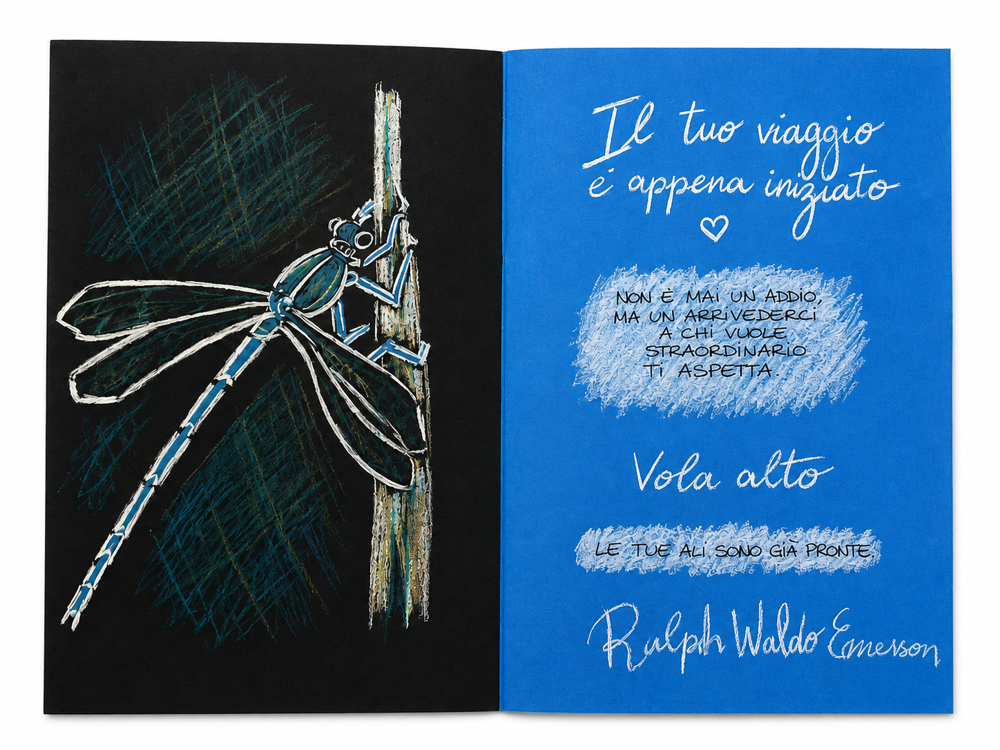
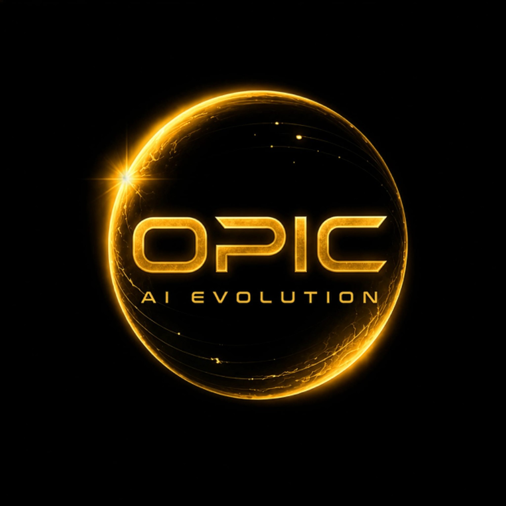

Identità e comunicazione visiva
Logo, manifesti, contenuti social, eventi e materiali coordinati quando serve una voce riconoscibile.
FR Visual Design · Francesca Rossello · Savona e online
Creo murales sociali, identità visive, contenuti e siti web con una direzione chiara: trasformare un messaggio in qualcosa che le persone riconoscono, capiscono e portano con sé.

Tre direzioni
Logo, manifesti, contenuti social, eventi e materiali coordinati quando serve una voce riconoscibile.
Interventi visivi per spazi, attività, comunità e progetti sociali che devono lasciare una traccia concreta.
Presenze digitali leggere, curate e costruite intorno a contenuti, obiettivi e persone reali.
Portfolio selezionato
Li ho scelti perché mostrano il passaggio più importante: capire il contesto, trovare una forma riconoscibile e farla funzionare su supporti diversi.
Un progetto visivo dedicato a Mira, all'adozione e alla fiducia che rinasce.
Leggi il progetto
Questo esempio racconta come rendere contatti, servizi e stile subito riconoscibili.
Leggi l'articolo
Pezzi unici con colori, materiali, dettagli e frasi cercate su misura per ogni occasione.
Leggi il progetto
Logo, varianti e direzione grafica per una nuova realtà digitale chiara e riconoscibile.
Leggi il progetto
Sette lavori recenti tra materia, volto, cura, responsabilità e sguardo.
Apri le opereTestimonianze
Testimonianze reali collegate a lavori, persone o enti che hanno autorizzato la pubblicazione.
“Desideriamo ringraziare di cuore Francesca Rossello per il murales realizzato e donato al nostro canile, dedicato ad Arvey, protagonista del nostro progetto di sensibilizzazione nelle scuole.
Grazie a questo murales, Arvey continuerà ad accompagnare il percorso educativo che portiamo avanti, rendendo il canile un luogo sempre più accogliente per gli animali, i bambini e le scolaresche.
Un sincero grazie per il tempo, l’impegno e la professionalità dedicati alla nostra struttura.”
Progetto collegato: Arvey continua la sua missione d’amore
Fonte: Post pubblico del Canile di Savona · 2026

Profilo
Visual designer, atleta, volontaria e giovane progettista visiva con base a Savona.
Unisco creatività, disciplina sportiva, studio scientifico e impegno sociale. Nei miei progetti porto metodo, sensibilità e attenzione al messaggio: non solo immagini belle, ma comunicazione visiva pensata per restare.
Contatto
Raccontami cosa vuoi realizzare, a chi deve parlare e dove dovrà vivere. Puoi scrivere una richiesta rapida o compilare il brief guidato quando hai già più dettagli.